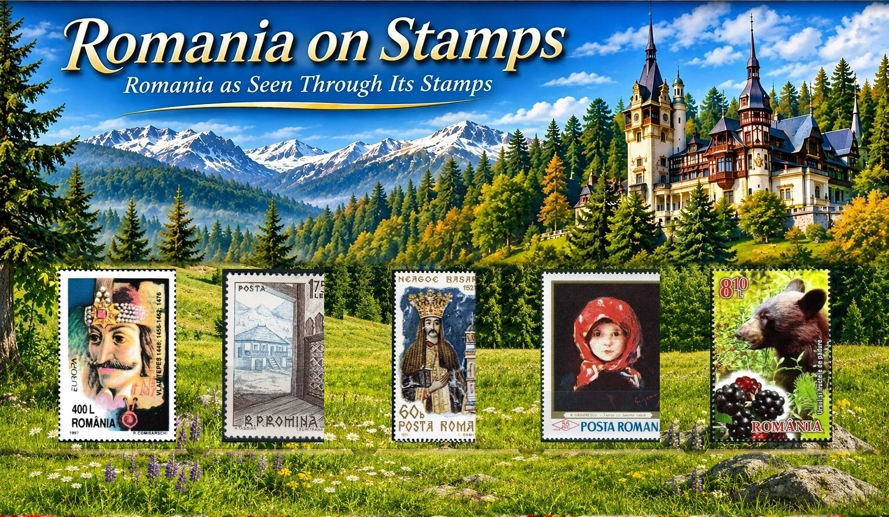

Romania’s postage stamps tell a fascinating story — of a rich history, remarkable people, unique places, artistic treasures and a wide variety of themes. Explore our illustrated articles and discover the beauty and diversity of Romanian philately.